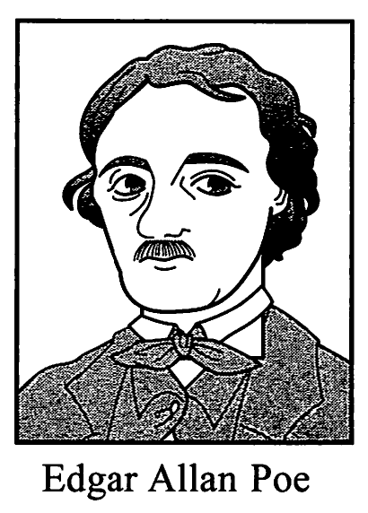

In your English class, you will give a presentation about a great writer in the world. You found the following article and prepared notes for your presentation.
Edgar Allan Poe was born on January 19, 1809 in Boston, Massachusetts. He was an American author, poet, editor, and literary critic. He is widely regarded as a central figure of Romanticism in the United States, and of American literature. Poe is best known for his tales of mystery. He was one of the earliest American practitioners of the short story, and is generally considered the inventor of the detective fiction genre.

Edgar Allan Poe
Both Poe's father and mother were professional actors. They died before the poet was three years old. John and Frances Allan never formally adopted him but raised him as a foster child in Richmond, Virginia. Poe attended the University of Virginia for one semester but left due to lack of money. Poe quarreled with John over the funds for his education and his gambling debts. In 1827, he enlisted in the United States Army under a false name. It was at this time his writing career began with his first publication, although humbly, with an anonymous collection of poems, Tamerlane and Other Poems (1827), credited only to "a Bostonian". With the death of Frances Allan in 1829, Poe and John Allan reached a temporary reestablishing of good relations. Poe later failed as a military officer's trainee at West Point. He firmly stated his strong wish to be a poet and writer and parted ways with John Allan.
Although Poe began earnestly in his attempts to start his career as a poet, he chose a difficult time to do so. The American publishing industry was particularly hurt by the Panic of 1837, a financial crisis in the United States: profits, prices, and wages went down. Unemployment went up, and pessimism prevailed. Publishers often refused to pay their writers or paid them much later than they had promised. Poe had to have had a hard time. After his early attempts at poetry, Poe turned his attention to prose. He spent the next several years working for literary journals and periodicals. He became well-known, acting as a critic of literature in his own unique way. His work forced him to move between several cities, including Baltimore, Philadelphia, and New York City. In Baltimore in 1835, he married his cousin Virginia Clemm, which may have inspired some of his writing.
In January 1845 Poe published the poem, "The Raven", which became a popular sensation. It made Poe a household name almost instantly, though he was paid only $9 for its publication. His wife died of tuberculosis two years after its publication. For years, he had been planning to produce his own journal, The Penn (later renamed The Stylus), though he died before it could be published. On October 7, 1849, at age 40, Poe died in Baltimore; the cause of his death is unknown and has been variously attributed to alcohol, brain disease, cholera, drugs, heart disease, suicide, tuberculosis, and other causes.
Edgar Allan Poe and his works influenced literature in the United States and around the world, as well as being responsible for the start of specialized areas of writing. He is considered as one of the originators of both horror and detective fiction. He is also credited as the "architect" of the modern short story. As a critic he was one of the first writers to put emphasis on the effect of style and structure. He was thus a forerunner in the "art for art's sake" movement. Poe is particularly respected in France, in part due to early translations by Charles Baudelaire. Baudelaire's translations became definitive artistic performances of Poe's work throughout Europe.
Poe and his work appear throughout popular culture in literature, music, films, and television. A number of his homes are dedicated as museums today. The Mystery Writers of America present an annual award known as the Edgar Award for distinguished work in the mystery genre.